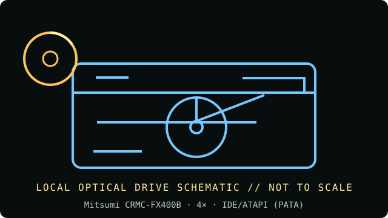

[ INDIVIDUAL COMPONENT // OPTICAL DRIVES ]
Mitsumi CRMC-FX400B
Internal 4× CD-ROM-only reader with a parallel ATA host interface. Rated speed is a manufacturer class maximum, not a guaranteed sustained transfer rate. Verify the exact label and revision before acquisition or installation.

IDENTIFICATION: Mitsumi CRMC-FX400B · confirm the complete unit label, suffix/OEM number and revision; this reader-only record does not claim writing capability.
Documented specifications
| Catalog subcategory | CD-ROM readers |
|---|---|
| Exact product identifier | Mitsumi CRMC-FX400B |
| Era / product type | mid-1990s internal CD-ROM reader |
| Media / read and write support | CD-ROM data; the available model card does not identify subformats. Confirm audio-CD or recordable-media support with the exact revision manual; no CD writing is supported. |
| Rated read speed | 4× maximum CD-ROM read; peak rating, not a guaranteed sustained rate. No recording is supported. |
| Interface / mechanics | IDE/ATAPI (PATA); internal 5.25-inch half-height drive; check the exact bezel/revision against the unit before fitting. |
| Host compatibility | Connect to a legacy IDE/ATAPI PATA channel; set the drive-select jumper to suit the other device on that channel. A modern host requires a compatible PATA controller or bridge; this is not SATA or USB. |
| Model distinction | CRMC-FX400B identifies the 4× model; do not conflate it with later Mitsumi FX-series mechanisms or writer models. |
Media and preservation notes
A CD-ROM reader is not a CD writer. Optical-disc condition, reflectivity, errors, firmware and host software all affect practical readability; a speed label alone cannot establish a successful preservation read.
- Inspect the disc for cracks, delamination or contamination before spinning; handle only by its edge or center hole.
- Record the exact model and firmware, host/controller, software, media type, retries and read/verification errors; retain a checksum-verified image and acquisition log.
- Store source media in protective cases in a clean, cool, dry and dark environment. Preserve an unmodified original and use verified copies for access.
Installation and compatibility checks
- Connect to a legacy IDE/ATAPI PATA channel; set the drive-select jumper to suit the other device on that channel. A modern host requires a compatible PATA controller or bridge; this is not SATA or USB.
- CRMC-FX400B identifies the 4× model; do not conflate it with later Mitsumi FX-series mechanisms or writer models.
- Compare the drive label and manual revision before applying speed, media or jumper claims; OEM variants may differ even when the front bezel is similar.
Documentation, standards and preservation references
- Mitsumi CRMC-FX400 optical-drive card — settings and interfaceModel-family card confirming 4×, ATAPI, and jumper configuration; compare the FX400B label against this family entry.
- Mitsumi FX Series IDE CD-ROM installation manualInstallation and host/jumper reference for the Mitsumi FX-series IDE readers.
- Internet Archive — Mitsumi CD-ROM driver collectionLegacy driver files; use only software matching the exact host and model.
- Ecma International — ECMA-130 CD-ROM standardCD-ROM physical format reference; it does not certify a drive revision or guarantee every media read.
- NIST — Care and handling of CDs and DVDsOptical-media preservation guidance; not a drive-specific specification.
Model-specific formats and interface notes are based on the references listed above. Match those references to the complete unit label and revision; listed support does not guarantee a successful read from every aged or recordable disc.